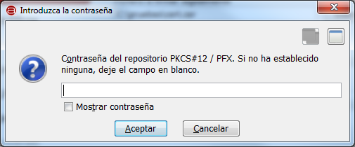
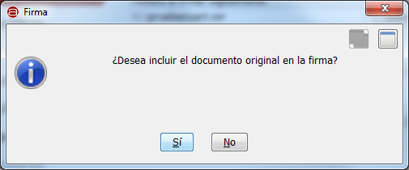

Desde la ventana de "Firma" es posible realizar firmas electrónicas sobre un documento local o remoto en diversos formatos.

Las opciones disponibles son:
- Fichero a firmar digitalmente:
- Permite seleccionar el fichero que se desea firmar. Es posible pulsar el botón "Examinar" para buscar un fichero en disco o
escribir directamente su ruta (local o remota) en la caja de texto asociada.
- Tecla de acceso rápido: g
- Tecla de acceso rápido al botón Examinar: e
- Almacén certificados:
- Permite seleccionar el almacén en donde se encuentra el certificado que deseamos utilizar para realizar la firma. Las opciones
disponibles son:
- Windows / Internet Explorer: Para tomar el certificado del almacén de Windows o un dispositivo externo (por ejemplo, el DNIe)
instalado en el sistema.
- Mozilla Firefox (unificado): Para tomar el certificado del almacén de Firefox o un dispositivo externo (por ejemplo, el DNIe)
configurado en este almacén.
- PKCS#12 / PFX: Para tomar el certificado de un almacén en disco en formato P12 o PFX.
- Tecla de acceso rápido: a
- Formato:
- Permite seleccionar el formato de firma electrónica. Los formatos disponibles son:
- Firma estándar (XAdES Detached): Principal formato de firma avanzada XML utilizado en la Administración Pública.
- XAdES enveloping: Sólo disponible en la vista avanzada. Formato de firma avanzada XML.
- XAdES enveloped: Sólo disponible en la vista avanzada. Formato de firma avanzada XML. Sólo permite firmar ficheros XML.
- CAdES: Formato de firma avanzada binaria. Permite decidir si se deben incluir los datos firmados dentro del fichero de firma.
- PAdES: Formato de firma avanzada para documentos PDF. Sólo permite firmar este tipo de documentos.
- Tecla de acceso rápido: o
Al pulsar el icono de ayuda se muestra la ventana de ayuda para el menú "Firma".
- Tecla de acceso rápido para el botón de Ayuda: h
Para ejecutar la operación pulse el botón "Firmar". A continuación se le mostrará un diálogo modal para la selección del certificado que
desea utilizar para la firma.
Si la operación finalizó correctamente, se le mostrará un diálogo para el guardado de la firma electrónica generada.
Tenga en cuenta que si el almacén de certificados seleccionado está protegido con contraseña, se le solicitará esta antes de poder
acceder al listado de certificados.

Todas las firmas generadas a través de esta interfaz incluyen los datos firmados dentro del fichero de firma (firma implícita),
a excepción de la firmas en formato CAdES en donde se da a elegir esta característica a través del diálogo:

- Tecla de acceso rápido para el botón "Firmar": r